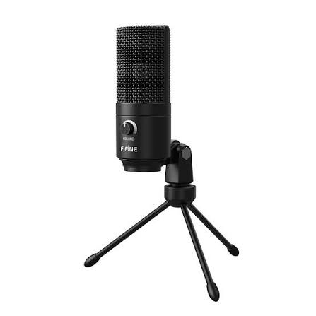

Webcam Logitech C270
Logitech · 720p HD
Cámara web compacta para videollamadas, clases virtuales y reuniones.
Bs 510
KANTUBYTE · EXTERIORES
Accesorios que completan tu espacio tecnológico. Encuentra dispositivos para estudiar, trabajar, jugar y crear.
15 accesorios disponibles
Logitech · 720p HD
Cámara web compacta para videollamadas, clases virtuales y reuniones.
Bs 510

Fifine · USB
Micrófono de escritorio para grabaciones, streaming y comunicación.
Bs 350

Logitech · USB
Parlantes compactos para escuchar música, videos y contenido de estudio.
Bs 190

Logitech · Gamepad
Control cableado para videojuegos compatibles con PC.
Bs 280

Redragon · Archelon
Superficie para mouse con base antideslizante y bordes reforzados.
Bs 100

UGREEN · 4 puertos
Amplía las conexiones USB disponibles en tu computadora.
Bs 160

Havit · RGB
Base para organizar y colocar tus audífonos de escritorio.
Bs 180

Fellowes · Soporte de escritorio
Plataforma para elevar el monitor y organizar el espacio de trabajo.
Bs 220

UGREEN · SD / TF
Permite conectar tarjetas de memoria para transferir archivos.
Bs 90

HyperX · USB
Micrófono para voz, transmisiones y grabaciones de escritorio.
Bs 490

JBL · Bluetooth
Parlante portátil inalámbrico para escuchar música.
Bs 950

Xbox · Inalámbrico
Mando inalámbrico compatible con dispositivos y juegos compatibles.
Bs 650

N11 · Ventiladores USB
Soporte con ventiladores para ayudar a refrigerar una laptop.
Bs 240

Logitech · Full HD
Cámara Full HD para videollamadas, clases y creación de contenido.
Bs 780

I-XTECH · Articulado
Brazo ajustable con abrazadera para sujetar un micrófono al escritorio.
Bs 210